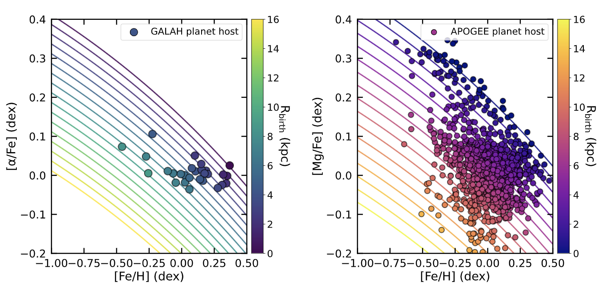
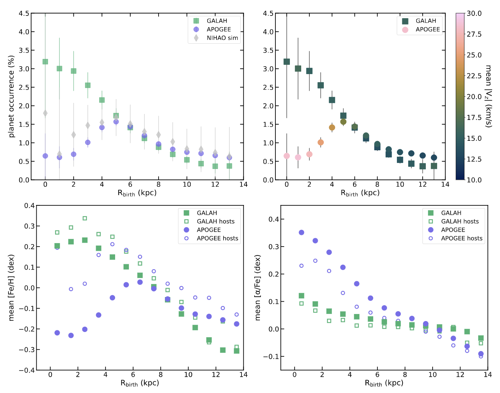
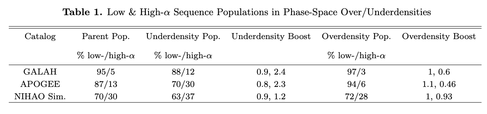
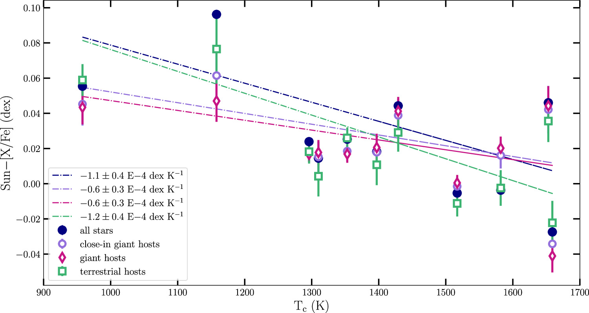
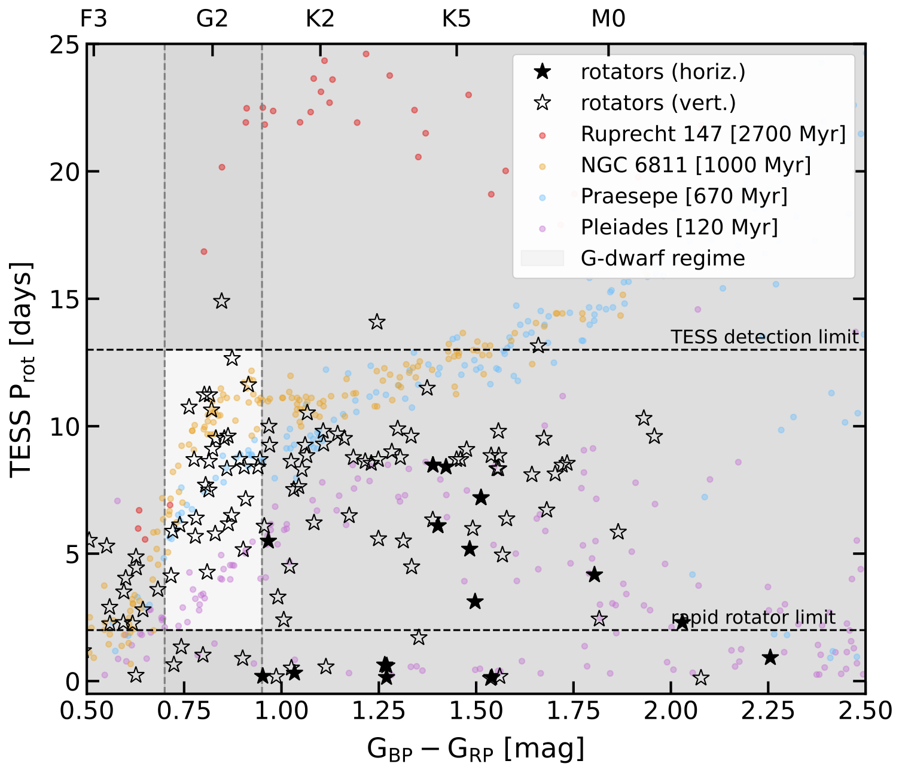
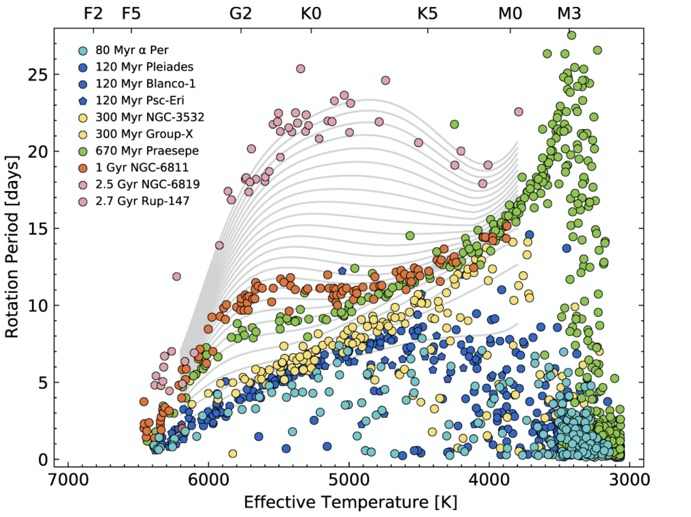
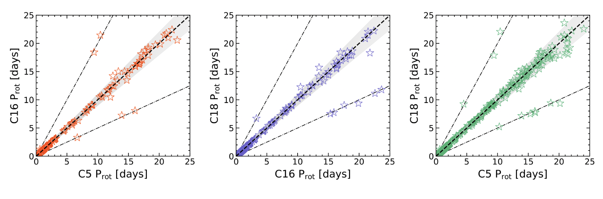
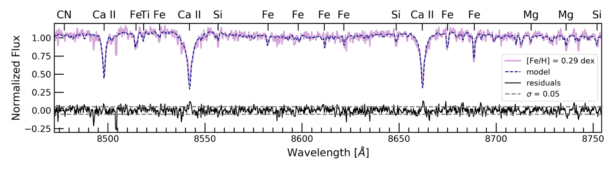
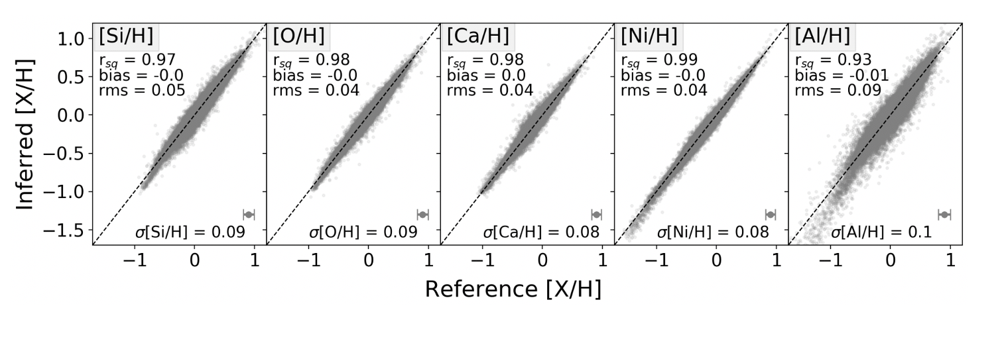
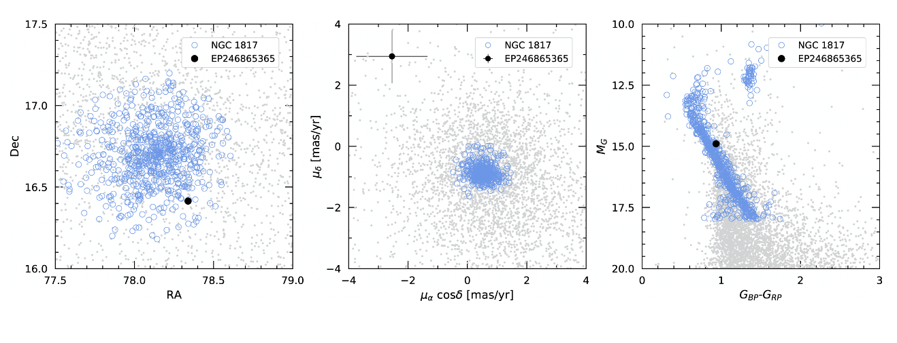

Research
Current Research Interests: We Exist in the (Galactic) Context
I use stars as tools to understand the Milky Way's evolution and the planets within it. We're at an exciting moment in astronomy, where massive astrometric, spectroscopic, and photometric surveys are unifying the once-separated subfields of exoplanets, stellar physics, and Galactic dynamics. Much of my work sits at this intersection. Scroll down and click on the tabs to learn more about my work, and please reach out if you're interested in collaborating!

When we account for Galactic dynamics and stellar radial migration, we’ve effectively surveyed more of the Milky Way than we realize! This plot shows confirmed planet host stars in [Fe/H]–[α/Fe] space (GALAH, left) and [Fe/H]–[Mg/Fe] (APOGEE, right), colored by their inferred galactic birth radius. Contours trace lines of constant galactic birth radius based on the model from Wang+2023 and Mills+in prep. Star-planet systems have migrated toward the solar neighborhood from both the inner and outer Galaxy. From Rampalli+2025.
My work relies on stellar abundances, kinematics, and ages inferred from large survey data to explore how planetary systems form and evolve across the Milky Way. To support this, I’ve packaged up my TESS rotation period pipeline (developed in Rampalli+2023) into an open-source tool: Protify. It enables robust measurement and validation of stellar rotation periods using Lomb-Scargle periodograms, and includes a classifier (inspired by Colman+2024) trained on benchmark open cluster stars.
Research Projects
Can the Galactic-scale distribution of Hot Jupiters be explained by the giant planet–metallicity dependence alone? (It seems like it!)
It is commonly known that Hot Jupiters are more likely to form around high-metallicity stars, but what happens when this correlation is projected onto Galactic scales? In this toy model study, we injected Hot Jupiters based on a metallicity-dependent power law into stars from the GALAH and APOGEE surveys and a Milky Way–like simulation from the NIHAO suite. We then studied how occurrence rates vary as a function of stars’ galactic birth radius and kinematic phase-space density (i.e., how clustered or isolated stars are in 6D position–velocity space).
Across all samples, we find that Hot Jupiter occurrence decreases with increasing galactic birth radius beyond 5 kpc, reflecting the Milky Way’s inside-out formation and radial metallicity gradient. However, at < 5 kpc, the trend depends on survey selection effects that yield different makeups of underlying Galactic stellar populations: APOGEE and NIHAO, which contain more high-α sequence (thick disk) stars in the inner Galaxy, show a turnover, whereas GALAH does not (majority thin disk stars like our Sun).

Simulated Hot Jupiter occurrence as a function of galactic birth radius using a metallicity-based injection model. GALAH, APOGEE, and NIHAO stars all show declining occurrence with increasing galactic birth radius, but differences at small radii reflect variations in the thin disk (low-α sequence) vs. thick disk (high-α sequence) makeup of the surveys—as seen in their differing metallicities, α-enrichments, and stellar kinematics.
We also recover the result from Winter et al. (2020), where over 92% of Hot Jupiters are associated with stars in kinematic phase-space overdensities. However, our findings show that this clustering preference reflects chemical and kinematic differences: stars in overdensities are more likely to be metal-rich, low-α, and kinematically cooler (i.e., part of the low-α sequence/thin disk)—exactly the stars more likely to host Hot Jupiters. In this way, we show that classic planet–metallicity correlations naturally manifest as occurrence trends across Galactic structure, with no additional environmental effects necessarily required.

Composition of phase-space overdensity and underdensity populations across GALAH, APOGEE, and the NIHAO simulation. Overdensities are dominated by thin disk (low-α) stars, while underdensities are enriched in thick disk (high-α) stars. These structures trace chemically distinct Galactic components, though not perfectly.
This work was done in collaboration with Professor Melissa Ness, Professor Elisabeth Newton, Professor Andrew Vanderburg, Dr. Tobias Buck, and Jessica Mills.
Is the Sun's apparent refractory depletion associated with its status as a planet host? (Not necessarily)
The Sun shows a trend of apparent relative depletion in refractory elements with increasing condensation temperature compared to 80% of its Sun-like counterparts (Bedell+2018) , but the source of this relative depletion is unknown. Early work from Melendez+09 , posits that the terrestrial planets have locked up these refractory elements. More recently, Booth and Owens (2020) suggested that giant planets (e.g. Jupiter) can create dust traps preventing the infall of refractory rich dust onto the host star. In this work we aim to determine if this apparent refractory depletion is due to the planets in the solar system by comparing refractory abundances for solar analogs and identified solar analog planet hosts.
We infer abundances for C, N, O, Na, Mn, Cr, Si, Fe, Ni, Mg, V, Ca, Ti, Al, and Y for > 17,000 solar analogs (50 of which are planet hosts) with Gaia RVS spectra (R=11,200) using the Cannon, a data-driven method (Ness+2018) . We find that the Sun remains refractory depleted compared to other Sun-like stars regardless of our current knowledge of the planets they host. This is inconsistent with the above theories of various types of planets locking up or sequestering refractories. Read the paper here. This work was done in collaboration with Professor Melissa Ness, Professor Graham Edwards, Professor Elisabeth Newton, and Dr. Megan Bedell. Stay tuned for future updates on our ongoing efforts to figure out what's up with the Sun!
 Linear fits of solar analogs (navy filled circles), close-in giant planet hosts (purple unfilled circles), giant planet hosts (pink unfilled diamonds), and terrestrial/small planet hosts (green squares) for element mean abundances and respective standard errors of the means from Na (958 K) to Y (1659 K). The slopes are indistinguishable within the errors, suggesting the increased relative depletion with condensation temperature of the Sun is unrelated to our current knowledge of planet host status.When was the last fast-acting dynamical event in our Solar neighborhood (Maybe as recently as < 120 Myr years ago!)
.jpg) The kinematics of stars in our Galaxy carry information about their dynamical history. It is generally assumed that stars are born on near-circular orbits,
but over their lifetimes, their orbits can be dynamically perturbed to a more eccentric state.
Corrugations of stars (hereafter referred to as wrinkles) in the solar neighborhood have been found at eccentric orbits using Gaia DR2 kinematics
as shown in rectangular boxes in the figure reproduced from Trick+19 . Note these data are plotted in galactic action space, but you can interpret this plot as
size of stellar orbit versus eccentricity of stellar orbit about the Galaxy.
The kinematics of stars in our Galaxy carry information about their dynamical history. It is generally assumed that stars are born on near-circular orbits,
but over their lifetimes, their orbits can be dynamically perturbed to a more eccentric state.
Corrugations of stars (hereafter referred to as wrinkles) in the solar neighborhood have been found at eccentric orbits using Gaia DR2 kinematics
as shown in rectangular boxes in the figure reproduced from Trick+19 . Note these data are plotted in galactic action space, but you can interpret this plot as
size of stellar orbit versus eccentricity of stellar orbit about the Galaxy.
Spiral arm resonances are one of the few dynamical phenomena that can kinematically heat stars from near-circular (or low radial actions in Galactic action space) to highly eccentric orbits (high radial actions) quickly, and simulations have shown that this process uniquely leaves wrinkles of eccentric stars like those seen in the observational data.
Young stars should not be found in eccentric orbits unless they were subject to a fast-acting dynamical event (e.g. a spiral arm resonance). Gyrochronologically age-dating the youngest stars in these orbits will lend insight into the dynamical phenomena that placed them there. 
We build and apply rotation period measurement pipelines to likely single stars with TESS light curves in two interesting regions of kinematic space, where these wrinkles are present. We identify 141 unique, rapidly rotating stars in highly eccentric orbits in the disk, some of which appear as rotationally young as the 120-Myr-old Pleiades.
Read the paper here. This work is done in collaboration with my PhD advisor, Professor Elisabeth Newton, Dr. Jason Curtis (Columbia University), Amy Smock (University of Arizona), and Prof. Kate Daniel (University of Arizona).
Are star spots a reliable way of measuring stellar rotation periods (Yes!)
My primary project as a Bridge scholar involved measuring rotation period stability for low-mass stars in the 670-Myr open cluster, Praesepe, with Professor Marcel Agüeros and his group including Dr. Jason Curtis, Prof. Stephanie Douglas, and Dr. Alejandro Núñez.
Gyrochronology, or the use of stellar rotation to infer ages of low-mass stars, has been shown to be a promising age-dating method for stars of unknown ages. As stars age, they lose angular momentum as a result of their magnetic fields carrying away stellar material. This in turn slows their rotation at a predictable timescale that we determine by empirically calibrating age-rotation relations using stellar populations of known ages (e.g. open clusters) as shown in the figure from Bouma+23 .
In order to measure stellar rotation, we rely on modulations in stellar light curves as a result of star spots periodically orbiting in and out of our view (Gif Credit: Dr. James Davenport ). Therefore, it is important to ensure the period we measure from photometry is intrinsic to the star rather than a particular spot alignment at the time.

We test this by measuring rotation periods for Praesepe stars with 2-3 K2 observational campaigns (C5, C16, and C18) worth of observations. We find that in > 95% of the cases we are able to measure the same period within an average of 0.3% indicating that a rotation period measurement is in fact representative of the star's intrinsic behavior. In this process, we also measure periods for > 200 additional rotators, including 33 found in the newly discovered tidal tails of the cluster. Read the paper here.
 Period-period comparisons by K2 campaign: C5 vs. C16 (left), C16 vs. C18 (middle), C5 vs. C18 (right). We see that > 95% of the stars' rotation period measurements in each subplot fall along the 1:1 ratio line well within the 10% of each other indicated with the shaded grey region. There is also a low rate of harmonics in which we observe double or half the period.How many stellar labels (parameters) does it take to predict the variance in a star's spectrum and associated abundances? (4 for Gaia-RVS-resolution surveys)
During my time as a Bridge scholar, I worked with Professor Melissa Ness and Dr. Shola Wylie to understand the dimensionality of chemical abundance information in the Gaia-RVS calcium-triplet-region spectra (expected in the third data release from the Gaia Mission).
We fit a quadratic model of four primary sources of variability described by the stellar labels of effective temperature, surface gravity, metallacity, and alpha-enrichment to the flux of spectra from the Gaia-RVS-like ARGOS survey. We find that models capture 85% of variance in the ARGOS spectra and that the largest residuals are concentrated around the calcium lines, as confirmed by a principal component analysis. This result likely marks departures from the completeness of the 1D-LTE label assumption.
 Example of ARGOS spectrum and its four-label model with prominent absorption features labeled. Data in pink with model over-plotted with blue dashed line. Residuals in black and noise threshold plotted with grey dashed line.Using the same four-label model with the Gaia-RVS-like RAVE-on Catalog, we check to see if we can infer measured Si, O, Ca, Ni, and Al abundances and find that we can. Running the same test with the higher-resolution APOGEE survey, we find that a measurement uncertainty of <0.03 dex is required to capture additional information from these elements. Thus, a four-label model is sufficient in describing chemical abundance variance for SNR < 200 in Gaia-RVS spectra. Read the paper here.
 The results for the test set of abundances from the RAVE survey. Each panel shows the r-squared goodness of fit metric of the model, the bias, and the rms difference of the (Reference-Inferred) abundance. The mean error is also included at bottom. The prediction is to within the error reported on the reference individual abundance labels, meaning four labels are sufficient to describe the full set of abundances to this precision.Did we find the first transiting hot Saturn candidate in an open cluster? (No)
As part of my senior thesis, I worked with Professor Andrew Vanderburg, Dr. Dave Latham, Dr. Sam Quinn, and Allyson Bieryla to test techniques for improving planet candidate validation in star-crowded fields of the K2 mission. This was done to prepare for the issues forseen with the large pixels of the TESS mission.
In this process, we discovered K2-308b, a hot saturn-sized planet thought to be associated with the 1-Gyr-old open cluster NGC 1817. Planets found in open clusters are extremely valuable since the age of the host star is easily determined and thus helps us constrain timescales for various planet formation and evolution scenarios. While we ultimately find that the planet's star is a field star incorrectly presumed to be a cluster member using Gaia DR2 astrometry, we note that a technique tested in my senior thesis, seeing-limited photometry, is a useful method for planet candidate validation, particularly in crowded fields. Read the paper here.
 K2-308 in RA/Dec space (left), proper-motion space (middle), and on a color-magnitude diagram (right). From the Gaia DR2 proper motion measurements alone, we see this star is sadly not associated with NGC 1817.I would be remiss if I did not mention the other research I was fortunate enough to have engaged in as an undergraduate and high-school student.
The summers after my first and sophomore year were spent at the Maria Mitchell Observatory (MMO) and NASA Ames as an REU Intern. At MMO, I worked with Professor John Salzer to detect ahd tabulate point-sources of H-alpha emission serendipitously found in images from the 2.1m WIYN telescope. Read the associated paper here.
The following summer, at Ames, I worked with Joe Catanzarite and Prof. Natalie Batalha to calculate the occurrence rate of hot Jupiters incorporating observational reliability. I found a 10% lower rate than what was reported in prior literature. You can read my AAS abstract and and watch my REU "lightning talk" (22:11).
In high school, I conducted observations and analyses of exoplanet transits in the Advanced Astronomy Camp, the UC COSMOS Program at UC Davis, and with Professor Kerri Cahoy at MIT.